Arte
Grupo de Danza
El grupo de danza del instituto participa en actos cívicos, festividades culturales y eventos estudiantiles. Una expresión artística que fortalece la identidad y el trabajo en equipo.
Vida estudiantil
Danza, banda de guerra y deportes que forman el caracter, el trabajo en equipo y el orgullo institucional de cada estudiante.
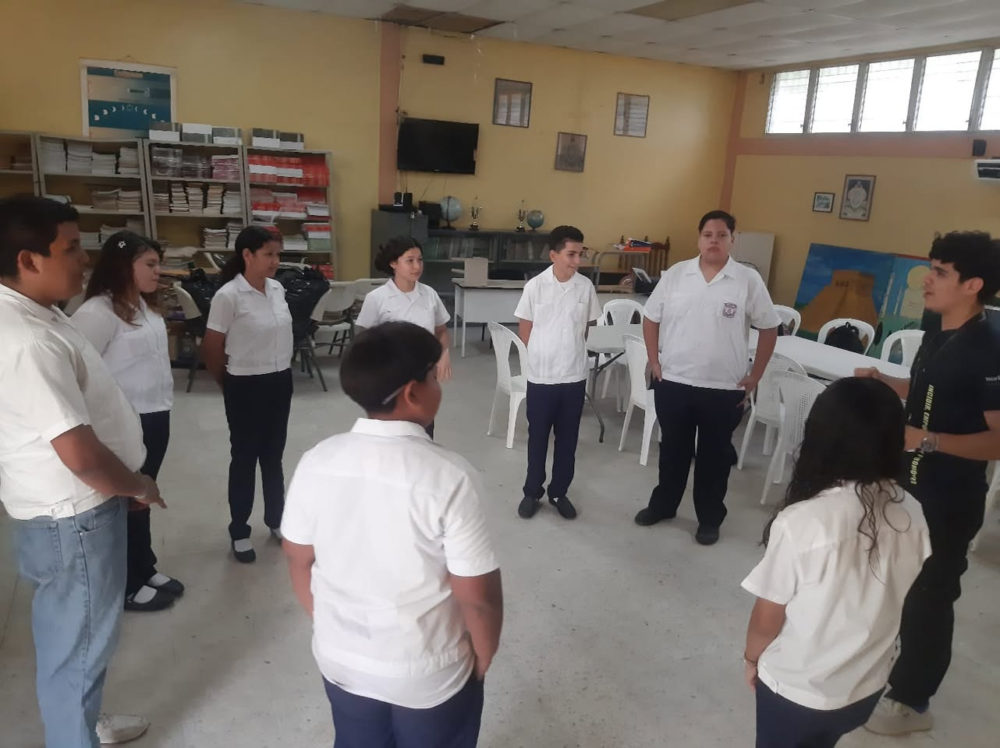
Arte y cultura
La danza y la banda de guerra representan al instituto en eventos cívicos, desfiles y celebraciones, desarrollando disciplina y sentido de pertenencia.
El grupo de danza del instituto participa en actos cívicos, festividades culturales y eventos estudiantiles. Una expresión artística que fortalece la identidad y el trabajo en equipo.
La banda de guerra del instituto desfila en conmemoraciones patrias y eventos cívicos representando a la comunidad educativa con disciplina, precisión y orgullo institucional.
Galería
Momentos del grupo de danza en presentaciones, ensayos y eventos institucionales.

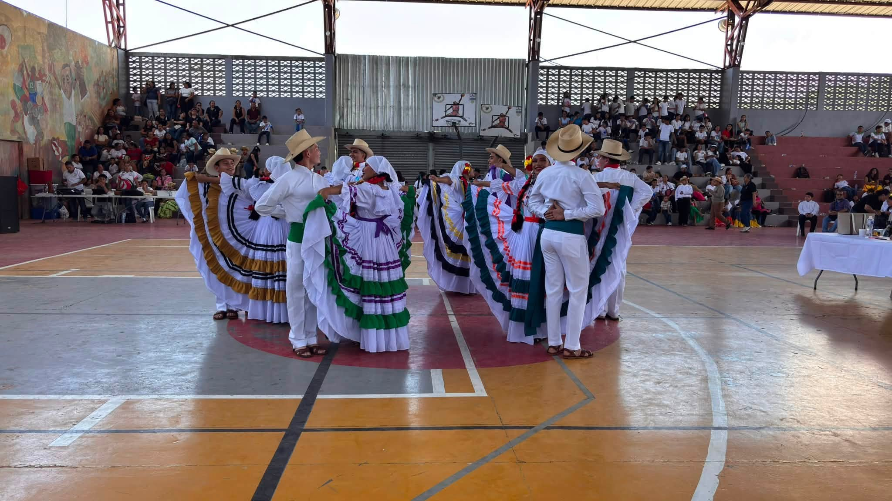
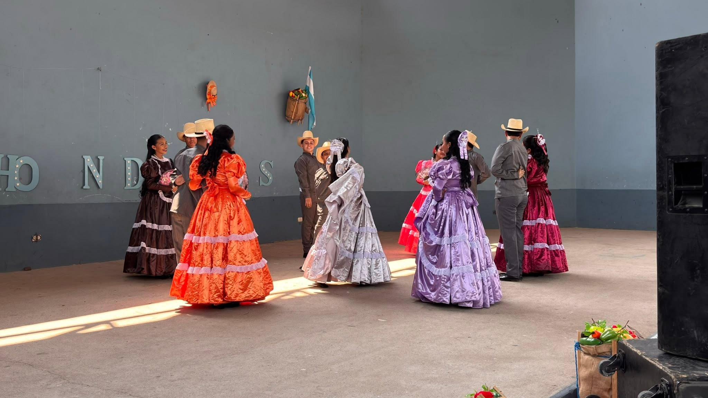
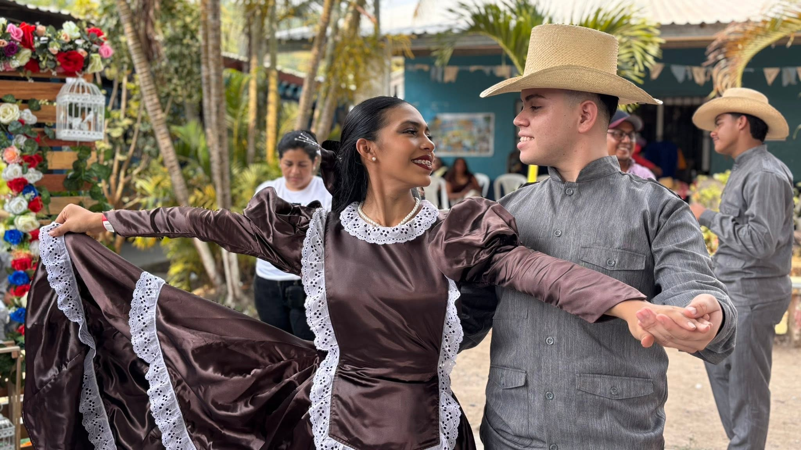
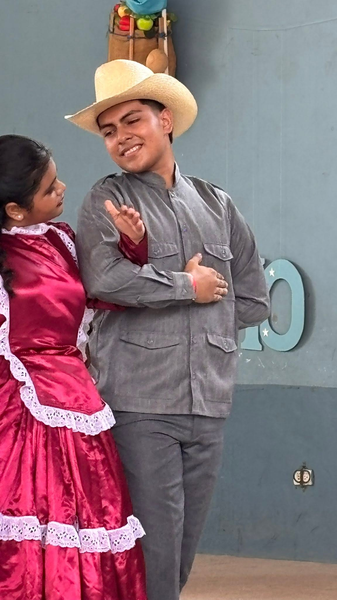
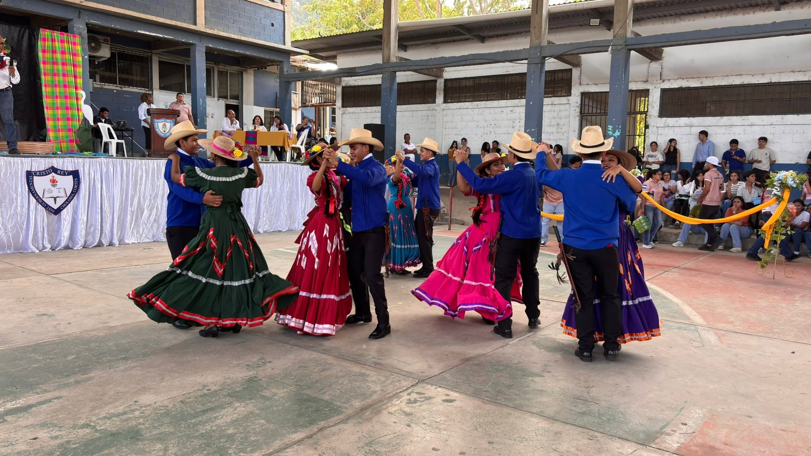
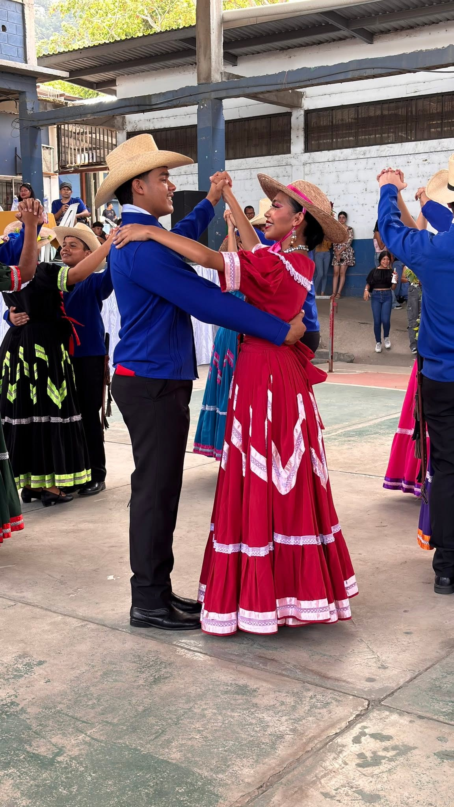
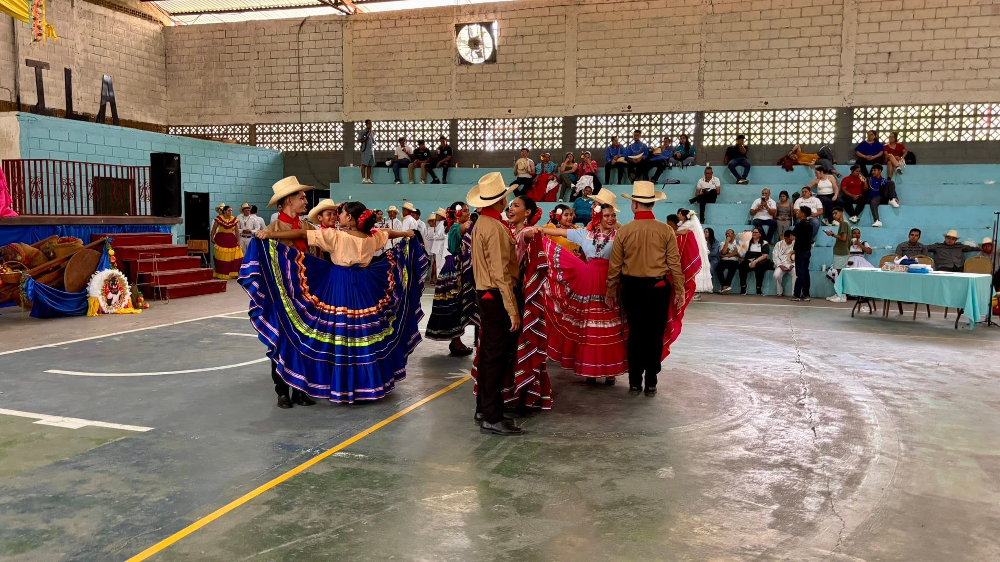
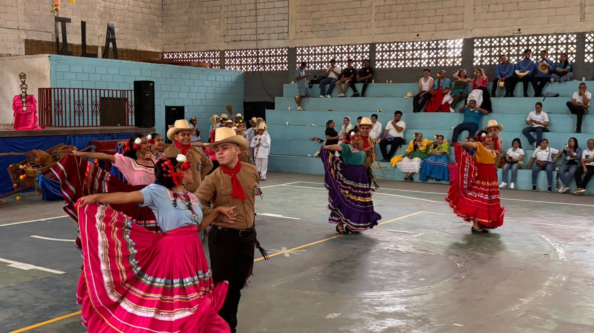
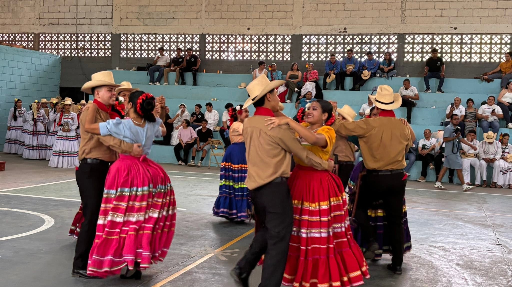
Galería
Actividades físicas, deportivas y recreativas que forman parte de la vida estudiantil del instituto.
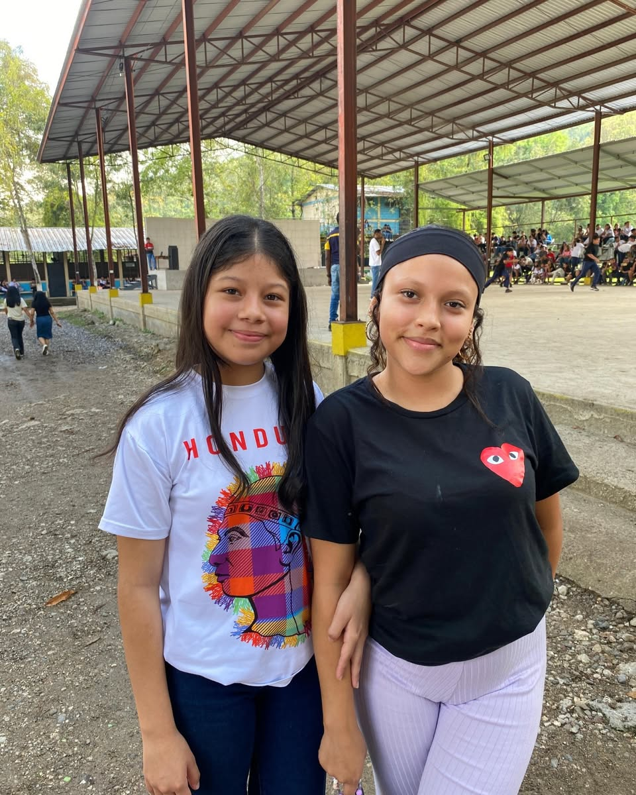
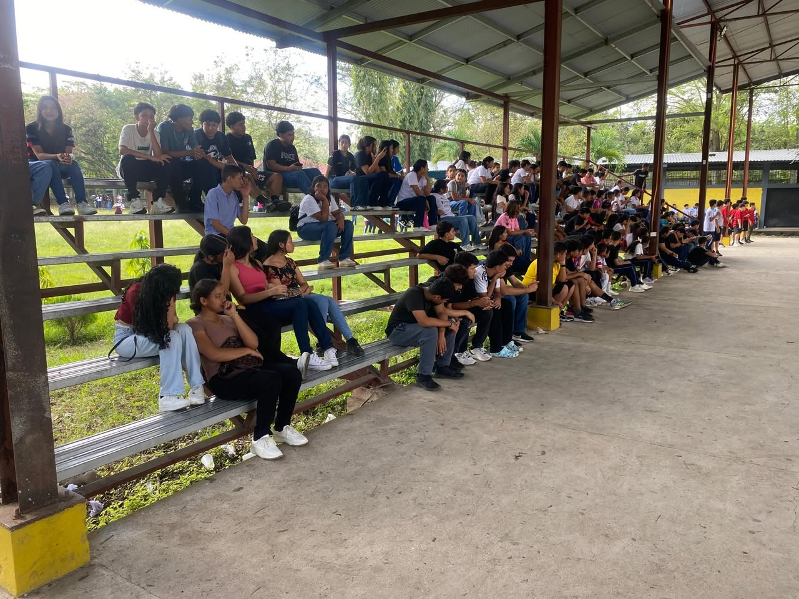
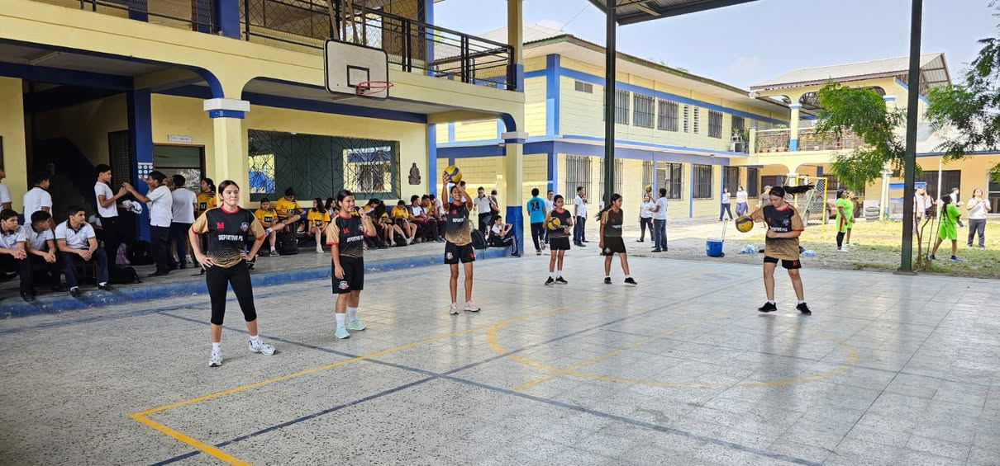
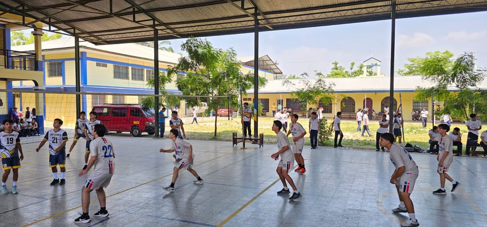
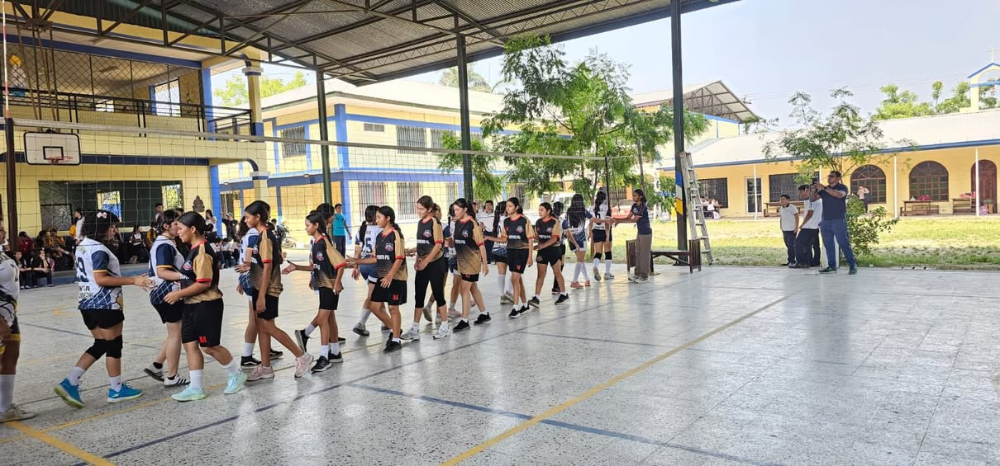
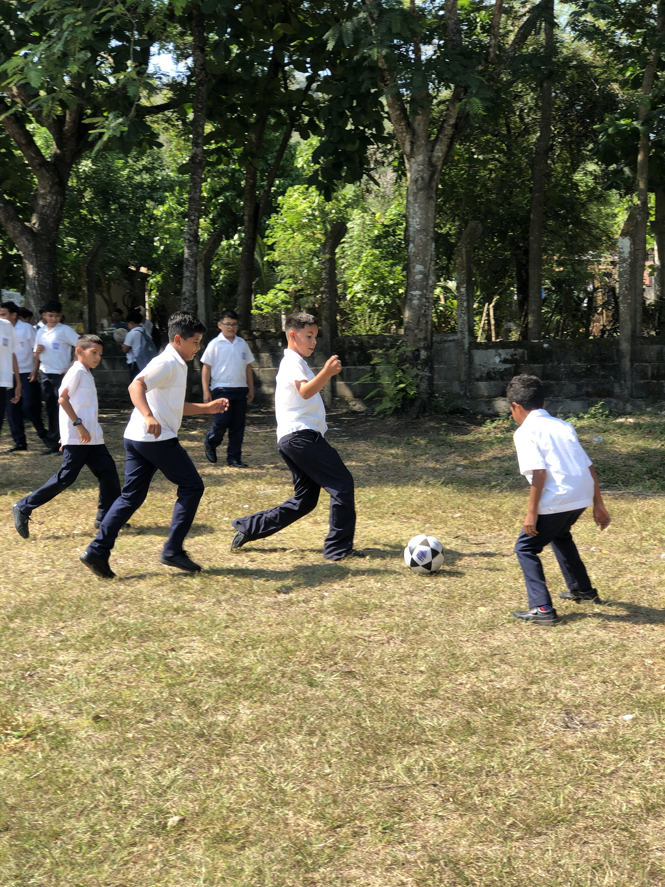
Deportes
Los deportes forman parte de la vida estudiantil del instituto, promoviendo la salud, la integración entre grados y la competencia sana entre compañeros.
Jornadas deportivas entre secciones y grados, fomentando la integración, el liderazgo y la competencia sana dentro del instituto.
El voleibol es una actividad que refuerza el trabajo en equipo, la comunicación y el compañerismo entre los estudiantes del instituto.
El baloncesto promueve la agilidad, la estrategia y el espíritu deportivo, con encuentros organizados que involucran a distintas secciones del instituto.
Más que clases
Las actividades extracurriculares complementan la educación académica desarrollando habilidades esenciales para la vida personal y profesional de cada estudiante.
Próximos eventos
Consulta la página de actividades para conocer los próximos eventos, jornadas deportivas y celebraciones institucionales del instituto.